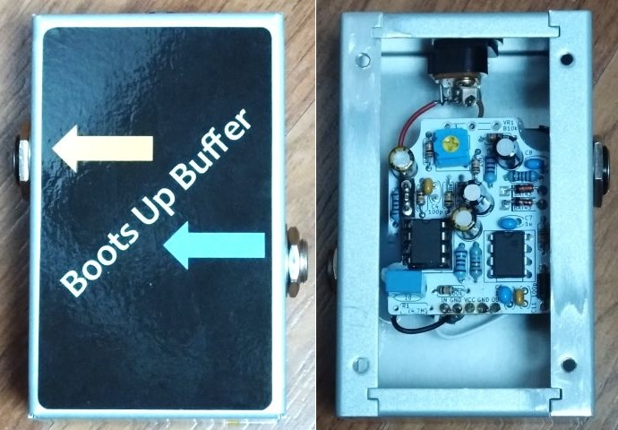
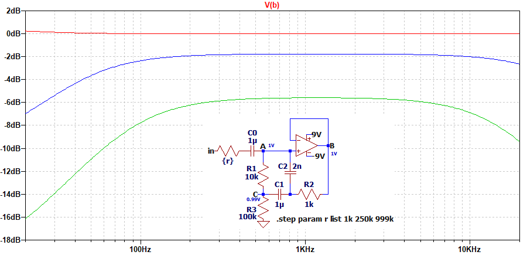
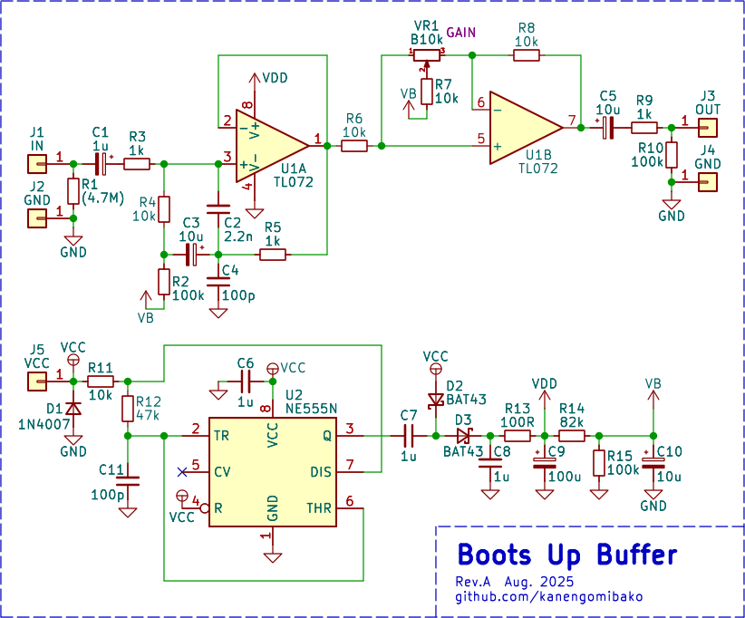
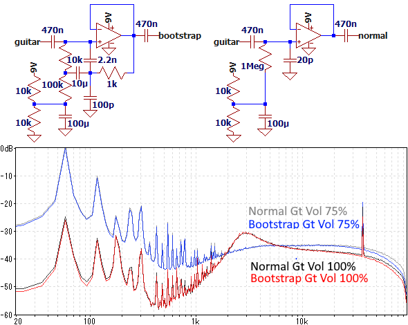

Boots Up Buffer
2025年08月23日 カテゴリー：自作エフェクター（アナログ）

ブートストラップという回路を使用したバッファーです。電源の昇圧も行っています。
【ブートストラップ】
ブートストラップは出力から入力への正帰還のことで、Pete Cornish CC-1やFREE THE TONE IRON FOREST、ORIGIN EFFECTS Halcyon Green Overdriveのバッファ部で使われています。下記ページに解説があります。
動作がわかりにくいため、下図に回路例を示します。
A点とB点はオペアンプのバーチャルショートにより等電位です。入力電圧が1Vのとき、C点はR1とR2の並列抵抗値909ΩとR3で分圧された電圧となるので、0.99Vです。A-C間の電位差が少なくなってR1の電流が減少し、抵抗値が100倍になったような効果が得られます。もし正帰還を使わずR1を1000kΩとした場合、熱雑音が大きくなるためノイズ的に不利となることが考えられます（参考：抵抗から発生する熱雑音と抵抗値の関係）。
C1の値が小さい場合、前段の出力インピーダンス {r} が高いときに低音域がカットされる効果があります。また、C2により高音域がカットされます（ただし、これは容量を17pFにしてグラウンドに接続した場合とほぼ同じ周波数特性です）。このため、外来ノイズの低減が期待できます。
【回路図】
バッファとしての使用を想定していますが、1/2～2倍のゲイン調節ができるようにポット（トリマー使用可）を設けています。
低音域カット
C3については、ギター本体のボリュームを絞ったときでも低音域のカットが生じないよう充分大きい値を設定しました。
高音域カット
C4を加えることで、より高音域のノイズを低減する効果を狙っています。
チャージポンプ
チャージポンプによる昇圧では、負荷により電圧が変動しやすくなる、スイッチングノイズが加わるといった問題があり、音質面では不利なように思います。しかしながら、入力できる電圧が上がる（ヘッドルームが高くなる）のは大きな利点です。チャージポンプ専用ICの中では、12Vまで使えて発振周波数を可聴域外にできるTC1044SCPAが使いやすいでしょう。
入手しやすいICであるNE555で倍電圧や負電圧生成を行っている例があり、今回はそれを用いました。発振周波数を設定でき安価で済む利点がありますが、電圧降下が大きくならないように低消費電力のオペアンプを使う必要があります。NE555はバイポーラタイプとCMOSタイプがあり、後者の方が出力電圧が高くなりました。TL072の入力電圧範囲は3V～電源電圧なので、バイアス電圧を高めに設定してあります。ノイズについては、スイッチングノイズ（実測96kHz）はどうしても避けられませんが、その他は問題ありませんでした。
【外来ノイズ測定】
ブレッドボード上に下図の回路を組み、ギターをシールドケーブルで接続します。そして、ホワイトノイズを出力した状態のフォンプラグをブレッドボードに近づけてノイズを拾わせました。ギターのボリューム（A500kΩ）は100%と75%（ノイズが最大になる状態）の2パターンです。
高音域で-2～-1dB程度のノイズ低減が確認できました。しかし、通常は外来ノイズがそれほど多くない上にシールドケースに入っているため、ほとんど差が出ません。ブートストラップには、特別大きな利点があるとは考えにくいようです。